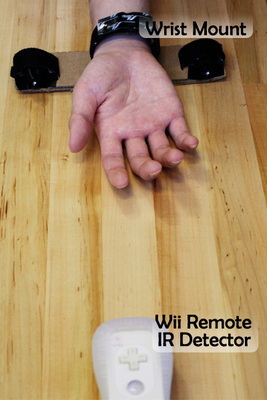
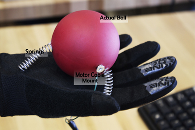
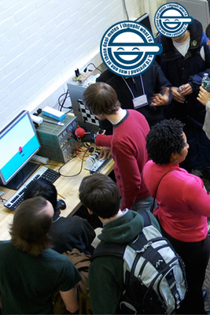

Catch
A Haptics-powered Ball Game
This project was a collaboration project with three others. The goal is to use haptic feedback to make contact forces between the player and objects in a 3D virtual environment feel more realistic.
Motivation
We have chosen to investigate the application of haptic feedback to add a tactual experience to virtual environments in 3D games. The recent emergence of systems such as the Nintendo Wii and the Xbox Kinect — both of which use motion tracking - has made immersive game environments a reality for the household. These devices represent leaps in user experience, enabling games to respond dynamically to players' actions.
Yet, something is left to be desired in these interactions. A player can 'hit' with a tennis racket using a Wii remote and feel only the vibration of its rumble pack. Throwing a right hook while boxing produces the same vibration, even though the two experiences are completely different in real life. With the Kinect, eliminating the handheld device creates more freedom, but even less sense of touch.
Our project is motivated by our belief that haptic feedback can be combined with today's dynamic visual environments to create a viscerally realistic experience. Grounded force feedback simulating contact interactions would add the most noticeable detail to such an environment.
Given that hands drive most interactions in virtual games, we chose to focus on the hand. Thus, our objective is to enable hand-eye coordination far beyond that provided by a vibrating remote control.
Background
Given our objective to mate force feedback with a 3D environment, we split our literature review into three areas: tracking the head and hands, coupling haptics and vision in games, and rendering grounded force feedback on the hand. Taken together, research in these areas will guide our design iterations.
Tracking the Head and Hands
Head and hand tracking is necessary to make the game environment respond to the user's movements. This is already accomplished by the Wii and Kinect systems, but we needed to reverse-engineer the basic process so tracking data can be read in from our game in a non-proprietary way. Here, we found that Chow's paper on Low-Cost Multiple Degrees-of-Freedom Optical Tracking for 3D Interaction in Head-Mounted Display Virtual Reality was particularly useful. Chow describes the use of a 6 degree-of-freedom optical tracking technique using two Wii-remotes as infrared sensors. We developed our hand tracking system using this methodology, and the algorithms Chow proposes could be used in future work to further filter the infrared signal and ensure smooth, accurate tracking.
Coupling Haptics with Virtual Environments
When determining the appropriate force to output based on the input tracking position, we must meet three design goals: a consistent user experience, a computationally simple method, and a robust failure mode. Bouguila's paper on Effect of Coupling Haptics and Stereopsis on Depth Perception in Virtual Environment was helpful because his experiments with stereopsis reminded us that, if depth cues are not provided, the user needs to remain in a roughly fixed position in order to believe the motions viewed on-screen. When simplifying our simulation, we took this into consideration by limiting the user to a small area in the Z-plane.
Rendering Force Feedback on the Hand
Finally, in developing a system to actually provide the output force on the user's hand, we needed a design that was simple enough to be created in one semester. We chose to use a cable-based system, and Williams' paper on Planar Cable-Direct-Driven Robots was instructive. Williams compared the use of 3- and 4-cable systems in a planar configuration to render feedback forces. Though we ultimately developed a simulation using only a single cable, our original designs were heavily influenced by Williams' findings.
Chosen Approach
Our vision involved an immersive 3D virtual environment that combined head and hand tracking to simulate the experience of viewing a world and having it respond completely to user movements. Then, we conceived of a 3- or 4-direction cable system to generate grounded haptic forces on a user's arm.
Given time constraints and several interface-related setbacks, we designed a proof of concept that would demonstrate our idea of haptic feedback mated to a virtual environment. The simplified design centered around a specific objective to accurately simulate the feeling of catching a ball.
This design included four sections: a tracking system to measure the hand's position and orientation, a software system to match a visual environment to the user's movements, a motor and cable assembly to generate grounded force feedback, and a custom haptic glove to render the feeling of a ball with tactile accuracy.
Sensing: Wii Remote-based IR Tracking

First, we used a Wii Remote (also known as a Wiimote) as an infrared sensor to track the location and planar orientation of the hand. Under normal Wii operation, the Wiimote's internal infrared detectors observe the presence of up to 4 IR diodes in an emitter array placed above or below a television.
We 'reversed' this process, keeping the Wiimote stationary and below the intended location of a player's arm. The Wiimote's IR sensor was trained on the center of the haptic workspace.
Then, a custom IR emitter mount was fashioned out of Velcro and cardboard. This device was designed to aim two IR beams at the Wiimote, enabling it to track the user's motion. The Velcro and cardboard were light, inexpensive, and barely noticeable while also ensuring the IR beams stayed constantly horizontal relative to the plane of the wrist. When combined with the Wiiuse C Library, our Wii Remote system was capable of tracking the two IR beams and collecting data of their positions.
Notably, experiments with Wiiuse revealed that the system measurements in the Z-direction were unreliable. Theoretically, true distance in the Y-Z plane should correspond to the observed X-Y distance between the IR dots. Yet, in practice, these measurements experienced extreme jitter, even when filtered. Thus, we chose to disregard the Z-direction temporarily and assume that the user roughly stayed within a constant X-Y plane some distance away from the screen. This gambit enabled us to measure positions more reliably.
Processing: 3D Virtual Environment
Once measurements of the user's position were read in, processing was handled by a C++ program, and the user's movements were rendered using OpenGL. The program interfaces with the Wiimote through a Bluetooth connection, and outputs a voltage to the actuation motor using a Sensoray 626 PCI card.
The 3D virtual environment was based on a program written for MEAM 625 homework assignments by Dr. Kuchenbecker. We created a new environment with a basic kinematics model for a sphere moving freely in 3-space. A rectangular "paddle" represents the user's hand position, and can interact with the ball with spring dynamics to simulate a catching action.
Within the game environment, a ball falls from a random X location in the sky at a regular interval. When the ball falls, the user has a short time to move under its trajectory and 'catch' it. A user's "score" is calculated, based on the simple game that a successful catch is +1 point and a miss is -1 points. If the user fails to catch the ball, the ball will bounce a few times on the ground before it disappears and a new ball falls from the sky.
Importantly, per our prior research, we knew that the program would need to handle special exceptions for when one or both of the IR LEDs was occluded or went out of range of the Wiimote. When only one LED is visible, the program is set to extrapolate the location of the second point based on its last visible location and a constant distance from the first point. If both points are not visible, the paddle simply stops moving within the virtual environment. In this way, rendering of extraneous forces is avoided.
Actuating: Cable-driven Force Output
The program is set to actuate a motor with a force proportional to the net force exerted by the falling ball on the virtual paddle. An arbitrary (approximately equal) mass is assumed for the ball and hand. This actuation is accomplished by a Maxon motor with peak torque at approximately 5A of input current.
A custom acrylic mount was laser-cut to hold the motor steady within an adjustable clamp. The motor was mated to a cable spool with high walls to ensure the cable is consistently captured.
The cable is passed through a right-angle intersection (smoothed to decrease friction) to keep it in a single plane of motion relative to the spool. Then, the cable stands vertically in the air, and is attached to a Y-splitter intersection that runs cable to the ball attachment in a glove, providing the hand enough freedom in 3D space. Overall, this arrangement enables the system to apply an arbitrary downward force to the glove-mounted ball. A consistent small force is maintained to keep the cable taut during movements.
Actuating: Custom Ball-Catching Glove
The core of the project is in rendering haptic feedback with a more realistic sensation than can be provided by vibration. With a system designed to pull downward to simulate the downward force of a ball, we sought to build a wearable device that could take the force and make it feel like a ball.
Perhaps unsurprisingly, it turns out that the best way to make a user feel like she is catching a ball is to pull an actual ball into her hand. Thus, we obtained a glove that was sturdy but not strong enough to limit a user's natural catching motion. This glove turned out to be a bike glove from Dakine that had silicone reinforcement in key locations.

We placed a rubber ball into the center of the glove, mounting screws on either side of the ball's diameter to pull the ball into the hand. These screws were tied to the cable Y-junction emanating from the motor-cable system.
In order to create an natural feeling of catching, we should not be able to touch the ball when there is no downward force output from the motor. Therefore, we mounted three relatively stiff springs to the glove in a triangle pattern. The springs were attached to the bottom of the ball, such that their tendency to extend caused the ball to hover at a spring length above the glove.
By tuning the constant tension force from the motors to be low enough, it was perfectly absorbed by the springs so that the user felt almost no force when moving freely. When the motor was activated to simulate a force, however, the springs were overcome and the ball was pulled into the hand, simulating the feeling of catching.
Demonstration
We exhibited our project twice: first during MEAM 625 in-class presentations, and then at the Haptics Open House. The demonstrated system was able to simulate the feeling of catching a ball, in a game that awarded points for each catch and deducted points for each miss.
After setting up the final system, users could feel the sensation of the ball hitting their hands, and its dynamic response to the relative force of the hand's motion and the ball's motion. The hand tracking system was limited to motion in the X-Y plane.
Most users could learn how to move their hands to play the interactive game within half a minute, especially for players who were already experienced with the Wii. To make the game more interesting, we added a feature that simulates the force of the ball hitting the paddle on a near miss (such as when the ball taps the edge of the paddle).
Below are two images of students testing the system.
Results

Approximately 80 people tested our demonstration at the Open House, and these interactions helped to validate our intuitions while providing extremely useful feedback and ideas for improvements.
In particular, users overwhelmingly affirmed that the glove attachment seemed 'real', for example, when closing their eyes and feeling the sensation of catching. This bodes well for our approach, as it indicates that a custom attachment such as the glove would be useful in rendering specific virtual environment interactions.
One of the greatest obstacles we encountered was the limited range of the IR sensors. Often during gameplay, users would be so immersed in the game that they would move their hands out of the Wiimote's horizontal detection range. Additionally, people who were taller or shorter than average experienced difficulty keeping their hands aligned with the Wiimote in the vertical axis.
Several potential improvements were identified:
- Provide a glove or attachment that can fit more potential hand sizes comfortably, and can be easily slid on and off
- Increase the maximum force output and the range of potential forces possible, likely by changing the motor and/or motor driver
- Allow for more nuanced interactions by including more advanced kinematics, such as enabling the ball to be thrown back up while simulating the ball's downward force until it is released
- Develop a tracking system that can accurately collect 3D position data, since the Wii remote was unable to track in the Z-direction
- Add more degrees of force feedback, as a single force direction was not enough to thoroughly test the system for improvement over the no-feedback control case
- Use longer-lasting IR emitter batteries, or an IR emitter system with batteries in easy-open compartments
Future Work
To continue this work in the future, we would first run a controlled experiment to see if this very basic setup does indeed provide some advantage over hand tracking with no feedback.
If validated under more experimental conditions, our first focus would be on adding the capacity to track motion in the Z-direction. This is crucial to the experience of 3-dimensional interactions, and could drastically improve the realism of even a single direction of force feedback. We experimented with using a two-camera system and an LED reflection on the hand to track its position, and could likely get this to work with a reasonable amount of effort, as an alternative to the Wiimote system.
Finally, we would focus on adding advanced kinematics, and ultimately additional degrees of haptic force feedback to the system. It is likely possible to attach another cable-drive motor from behind and above the user, to provide some forces in the up and backward direction. A third motor could be placed above and in front of the user to add additional realism.
References
- Yang-Wai Chow, "Low-Cost Multiple Degrees-of-Freedom Optical Tracking for 3D Interaction in Head-Mounted Display Virtual Reality," in International Journal of Recent Trends in Engineering, Issue. 1, Vol. 1, May 2009.
- Jeffrey Yim, Eric Qiu, and T.C. Nicholas Graham, "Experience in the Design and Development of a Game Based on Head-Tracking Input," in Proceedings of the 2008 Conference on Future Play: Research, Play, Share, 2008.
- E. Richard, et al., "Multi-modal virtual environments for education with haptic and olfactory feedback," Virtual Reality, vol. 10, pp. 207-225, Oct. 2006.
- L. Bouguila, et al., "Effect of Coupling Haptics and Stereopsis on Depth Perception in Virtual Environment," in Proc. 1st Int. Workshop Haptic Human Computer Interaction, 2000.
- S. Zou et al., "Vision-based Hand Interaction and Its Application in Pervasive Games," in Proc. 8th Int. Conf. Virtual Reality Continuum and its Applications in Industry, Yokohama, Japan, 2009, pp. 157-162.
- D. Tsetserukou et al., "FlexTorque: Exoskeleton Interface for Haptic Interaction with the Digital World," in EuroHaptics 2010, Part II, Amsterdam, 2010, pp. 166-171.
- G. Cini, et al., "A novel fingertip haptic device for display of local contact geometry." In Proceedings of the First Joint Eurohaptics Conference and Symposium on Haptic Interfaces for Virtual Environment and Teleoperator Systems, 2005
- Robert L. Williams II et al., "Planar Cable-Direct-Driven Robots," In 2001 ASME Design Technical Conference, September 9-12, 2001.